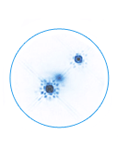

聚焦“学、准、严”助推收费 稽核业务提质增效省公航旅集团高速公路运营管理武威分公司山临收费所
为深入推进“拉网打逃”专项稽核行动，山临高速公路收费所积极探索稽核业务，聚焦“学、准、严”，严守堵漏“关键点”，织密治逃“防护网”，促进收费稽核业务提优增质。
聚焦“学”，培训赋能优业务。 123[ 山临所 ]锁定业务薄弱环节，实行“一对一”“点对点”培训，激活稽核业务骨干“传帮带”作用，通过经验交流、案例分析等方式，及时扫除业务盲点，稽核人员树立稽核“一盘棋”思想，围绕“数据怎么找、车辆怎么跟、费用怎么追”，按照“数据筛查、证据采集、责任判定、发起工单”等要求，理清稽核思路，持续提升稽核效率，做到环环相扣，相互印证，实现精准化稽核出成效、出经验，全面提升稽核人员整体业务素养。
123[ 山临所 ]锁定业务薄弱环节，实行“一对一”“点对点”培训，激活稽核业务骨干“传帮带”作用，通过经验交流、案例分析等方式，及时扫除业务盲点，稽核人员树立稽核“一盘棋”思想，围绕“数据怎么找、车辆怎么跟、费用怎么追”，按照“数据筛查、证据采集、责任判定、发起工单”等要求，理清稽核思路，持续提升稽核效率，做到环环相扣，相互印证，实现精准化稽核出成效、出经验，全面提升稽核人员整体业务素养。
聚焦“准”，精准稽核优成效 。345 [ 山临所 ] 紧盯数据反查和收费现场管控等关键环节，优化 “所、站、班”三级稽核体系，实施“数据锁定流程、排查线索踪迹、全力查找牌识、比对分析过程、结论确定方式”等措施，深化收费站与稽核人员联动协作，建立“车道+后台”互联体系，实现“现场+后台”紧密衔接。深化异常数据的精细筛查和逃费车辆的精准治理，持续提升稽核工作质效。
聚焦“严”，严慎管理促增收。 567[ 山临所 ] 强化稽核管理，健全稽核治逃定期交流、分析、共享工作机制；坚持目标导向、成效导向、实效引领，深度激发各部门、各岗位稽核治逃的联合效能，构建全员精业务、善治逃的奋进态势，形成职能互补、优势互融、协同配合、齐抓共管、精准治理的稽核治逃工作格局。Euclid, also known as Euclid of Alexandria, was a Greek mathematician, often referred to as the "Father of Geometry". He was active in Alexandria during the reign of Ptolemy I. Wikipedia
Image credit / News 特约供稿 09-19-2024 by SLGS